Portfólio
Portfólio
 Portfólio
Portfólio
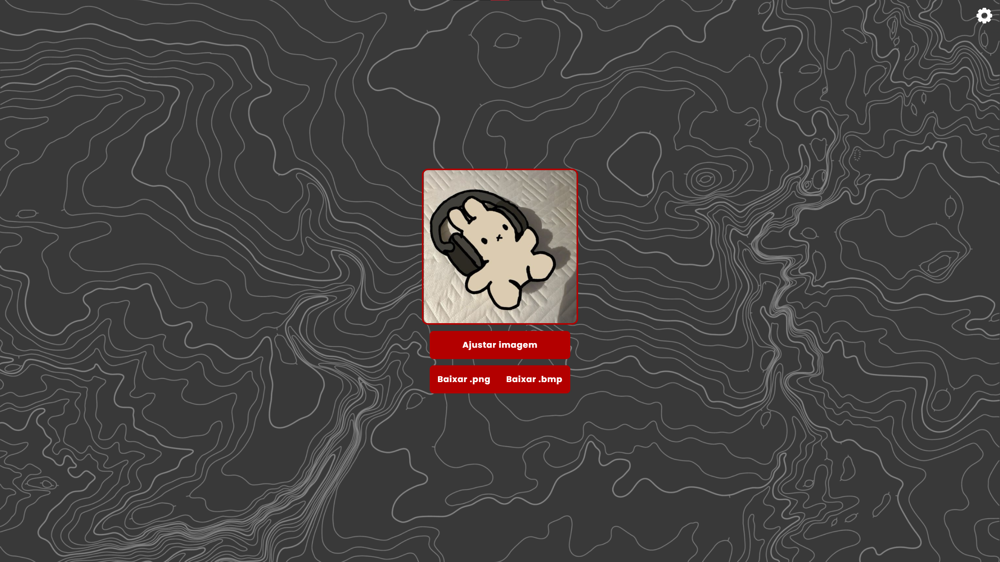
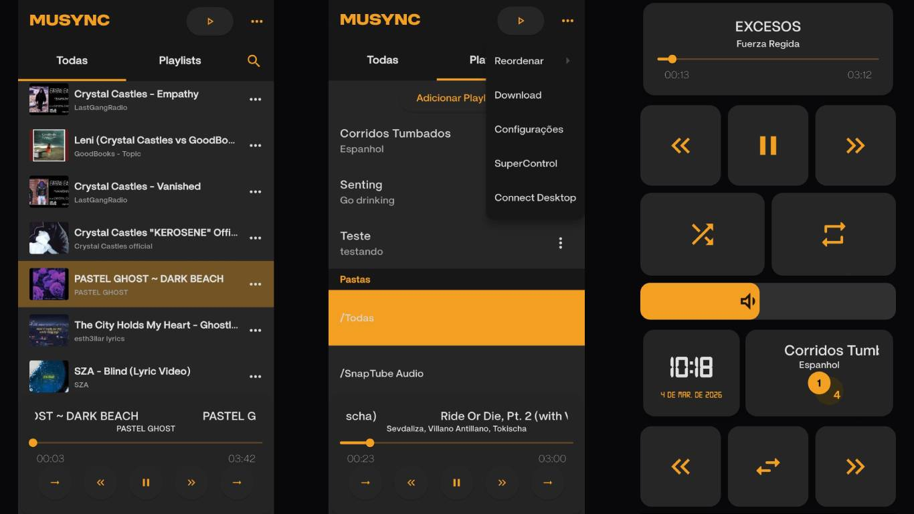
Um aplicativo mobile com capacidade de organizar musicas locais, reproduzi-las, baixar e transferir as musicas entre plataformas.
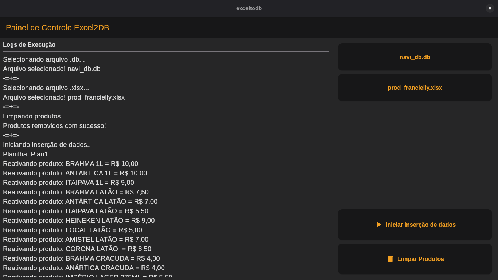
Um aplicativo simples e rápido criado para auxiliar no trabalho. Ele lê uma planilha base e insere os dados em um banco de dados. O projeto é direto ao ponto e fácil de usar.
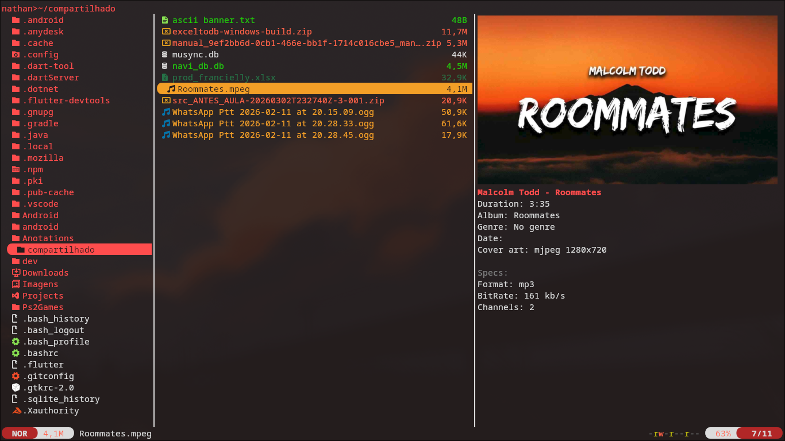
Uma coleção de plugins para o Yazi, focada em melhorar visualizações, fluxos de download/upload e inspeção de arquivos diretamente dentro do gerenciador de arquivos.
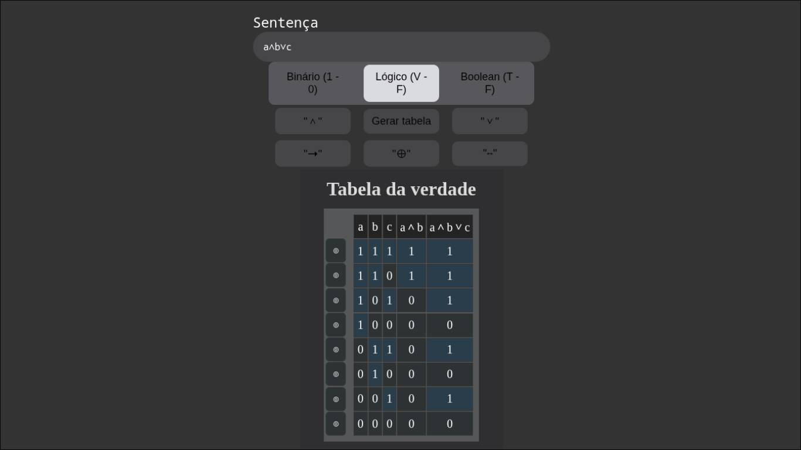
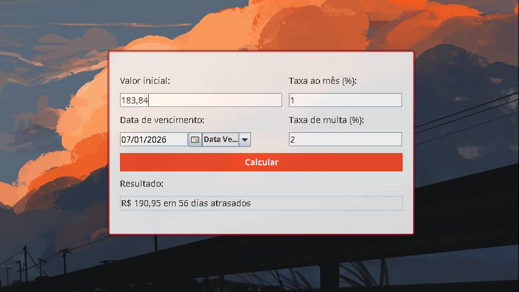
Um simples programa em java com swing que permite o calculo de taxa ao mês junto com multa. Ideal para condomínios e estâncias de chácaras.
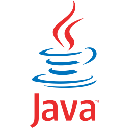
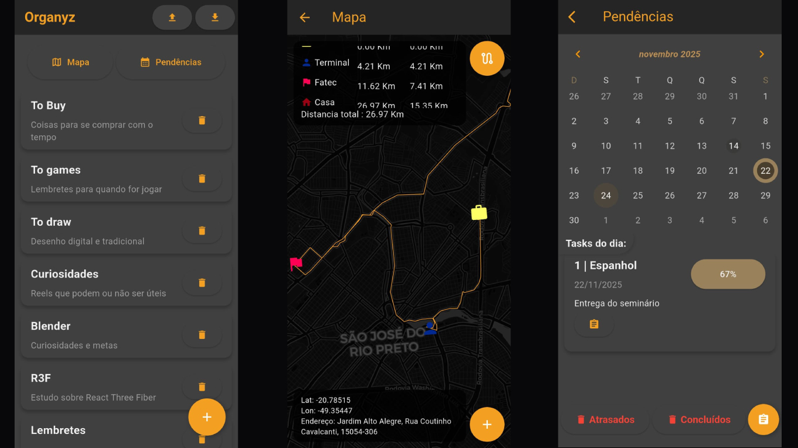
Primeiro projeto em flutter. Um aplicativo para Android que te permite fazer anotações e marcações importantes.
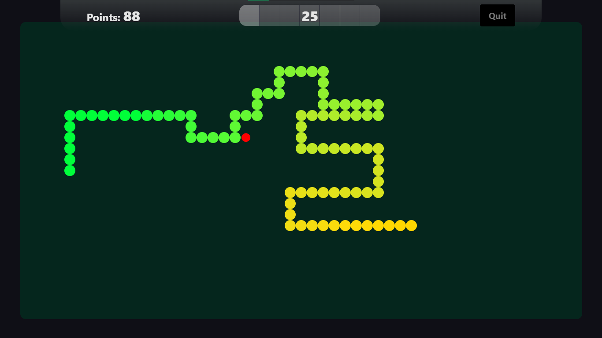
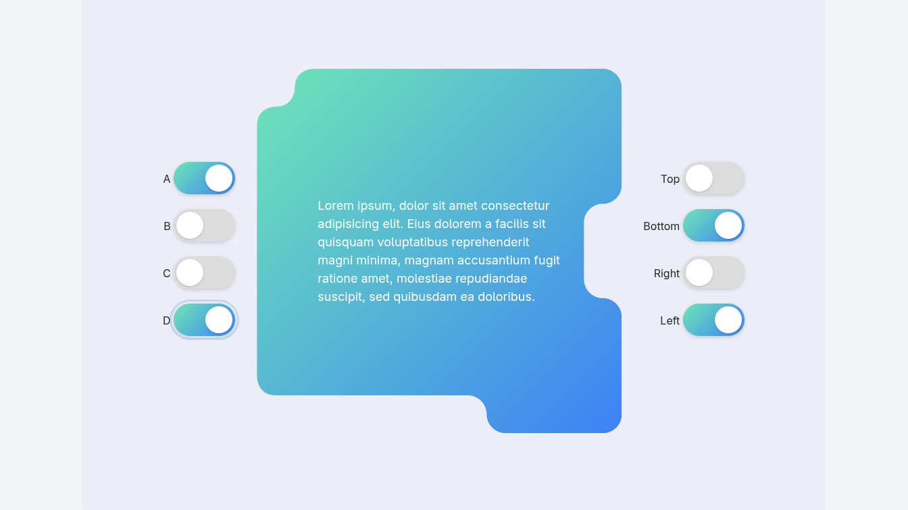
Este projeto é uma aplicação web experimental que utiliza clip-path com curvas Bézier cúbicas para criar divs com bordas arredondadas e entalhes personalizados em qualquer lado do container. A ideia é explorar efeitos visuais criativos e responsivos sem depender de imagens externas, apenas com HTML, CSS e JavaScript.
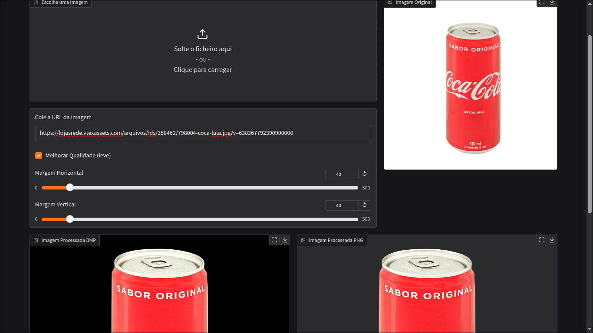
Um projeto que recebe a URL de uma imagem, remove o fundo com IA, deixa a imagem quadrada adicionando pixels transparentes, corta a imagem tirando pixels transparentes desnecessário para que apenas o conteúdo caiba, adiciona margens definidas manualmente e disponibiliza para download.
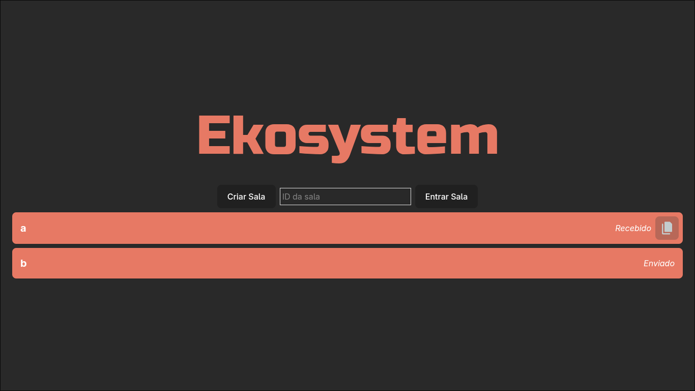
Um projeto simples de gerenciamento de tarefas desenvolvido em PHP, MySQL e Bootstrap 5, que permite adicionar, editar, excluir e acompanhar o estado das tarefas de forma prática e visual.
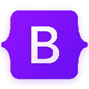
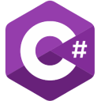
Um sucessor do meu primeiro projeto, o PlayOS. Agora criado na base do WPF com muitas melhorias tanto gráficas quanto lógicas. Um launcher de jogos locais, é um lugar para se juntar todos os jogos que você possui na sua máquina, com uma interface agradável e intuitiva.
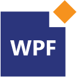
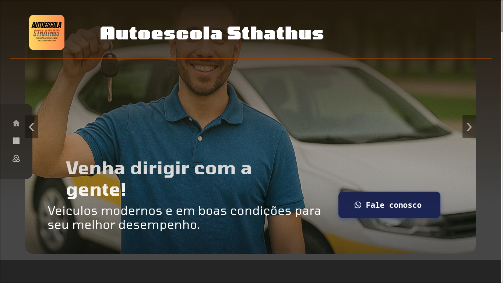
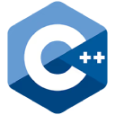
Um projetinho simples que transforma seu teclado em um tradutor de braille ou código morse, interceptando as letras antes que apareçam na tela e substituindo por simbolos, também traduzindo do braille para o alfabeto tranquilamente.
Um projeto simples feito em python no linux na intenção de transformar seu teclado em um tradutor de braille.
Um launcher de jogos ja instalados na máquina, visa facilitar o acesso aos jogos, permitindo que a área de trabalho fique livre de tantos atalhos.
Antecessor do Musync, mas feito apenas para windows e inacabado. Um player de musica que as baixa diretamente do youtube e as guarda no software.